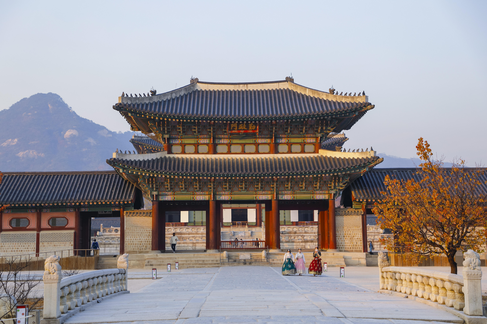
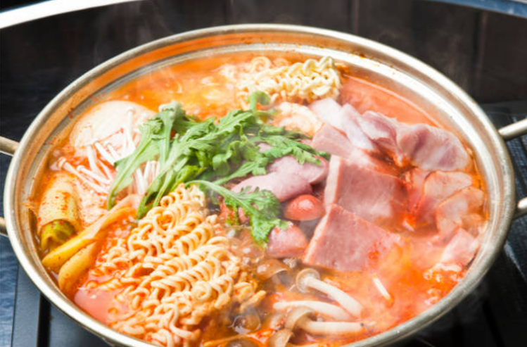
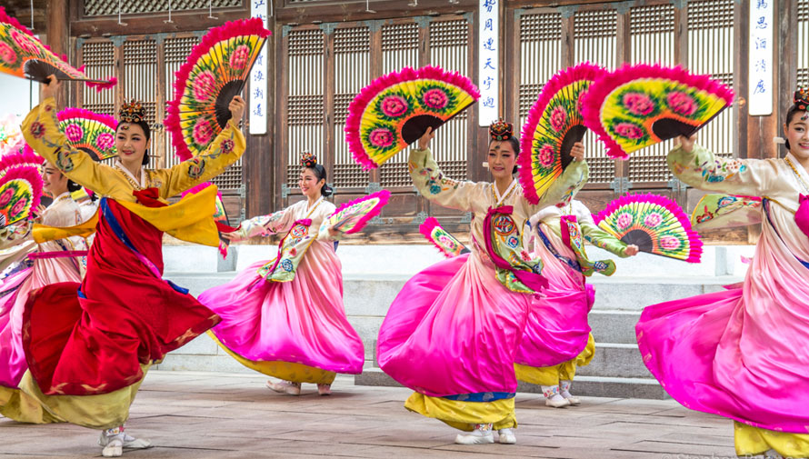

Corea del Sur: un lugar de cultura y tradición
Corea del Sur (oficialmente llamado República de Corea) es un país perteneciente a Asia Oriental, y está ubicada en medio de la península coreana. Es famosa por contrastar la historia y tradición presente en su arquitectura con su rápido avance de modernización.
Cuenta con un total de 51,6 millones de habitantes. Su capital es Seúl, una ciudad bonita y moderna pero que igualmente mantiene la tradición y la cultura, con algunos edificios antiguos aún presentes. Se habla coreano, y su alfabeto (tanto oral como escrito) se llama "Hangul". Su moneda es el Won Surcoreano (KRW), más llamado simplemente "Won".
Descubrí por Partes

Destinos turísticos
Conocé los palacios históricos, ciudades modernas y paisajes naturales de Corea del Sur.
Descubrir más →
Gastronomía
Descubrí los sabores tradicionales, platos típicos y la deliciosa comida callejera coreana.
Descubrir más →
Cultura y experiencias
Explorá sus tradiciones, festividades y experiencias únicas como vestir un hanbok.
Descubrir más →